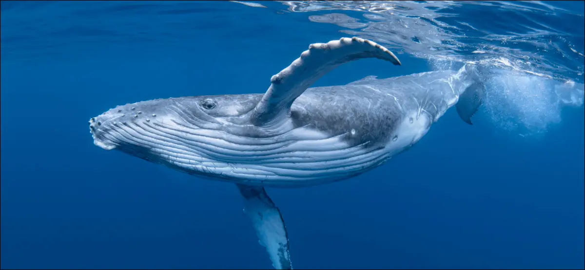

Los balénidos (Balaenidae) son una familia de cetáceos misticetos que incluye cuatro especies, distribuidas en dos géneros, Balaena y Eubalaena. Sin embargo el término ballena es usado en sentido amplio para referirse a todos los grandes cetáceos incluidos en el parvorden Mysticeti (cetáceos con barbas) como el rorcual azul (Balaenoptera musculus) y a varias especies del parvorden Odontoceti (cetáceos dentados), por ejemplo el cachalote (Physeter macrocephalus).
Estos mamíferos tienen un largo cráneo de hasta un tercio de la longitud total de su cuerpo, que en edad adulta mide de 15 a 17 metros y pesa de 50 a 80 toneladas.1 Poseen un estrecho y arqueado maxilar, lo que da a estos animales un perfil convexo. Esta forma permite la presencia de largas barbas, las cuales miden de 5 a 25 metros de longitud. A diferencia de los peces, las ballenas tienen la cola dispuesta en un plano horizontal, lo que les facilita la ascensión a la superficie, donde tienen que subir a respirar, aunque pueden aguantar hasta una hora bajo el agua, además, duermen la mitad de su cerebro para no hundirse. Tienen dos espiráculos, orificios nasales, situados en la cima de la cabeza, por los que expulsan vapor de agua acompañado a menudo de mucosidades. La gestación dura unos 12 meses y casi siempre tienen un único ballenato, que en el momento de nacer mide cinco metros y medio y pesa alrededor de 3000 kilogramos, el cual alimentan con una leche especialmente nutritiva. Su esperanza de vida es de unos 30 años. Hacen grandes migraciones desde los mares fríos, donde se alimentan, a los cálidos, donde se aparean y reproducen. Son cosmopolitas y también se encuentran en el Mar Mediterráneo.5 Su dieta consiste de pequeños crustáceos, principalmente copépodos, aunque algunas especies también comen importante cantidad de kril. Presentan una construcción robusta en comparación con los rorcuales y carecen de pliegues gulares y aleta dorsal.